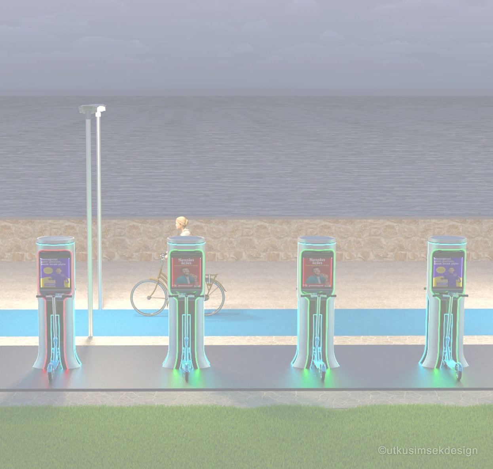
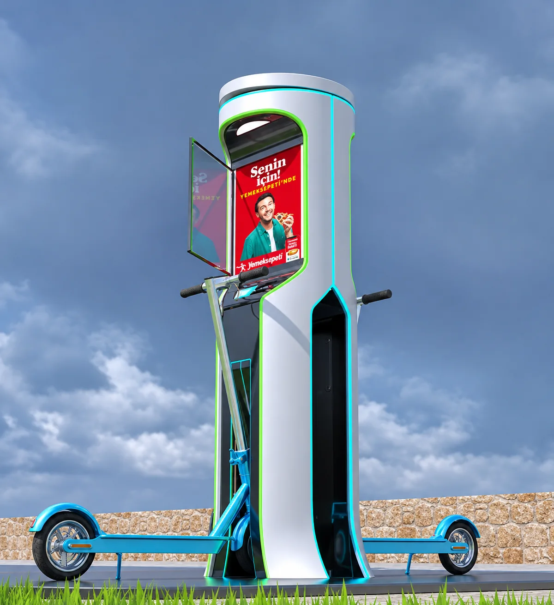
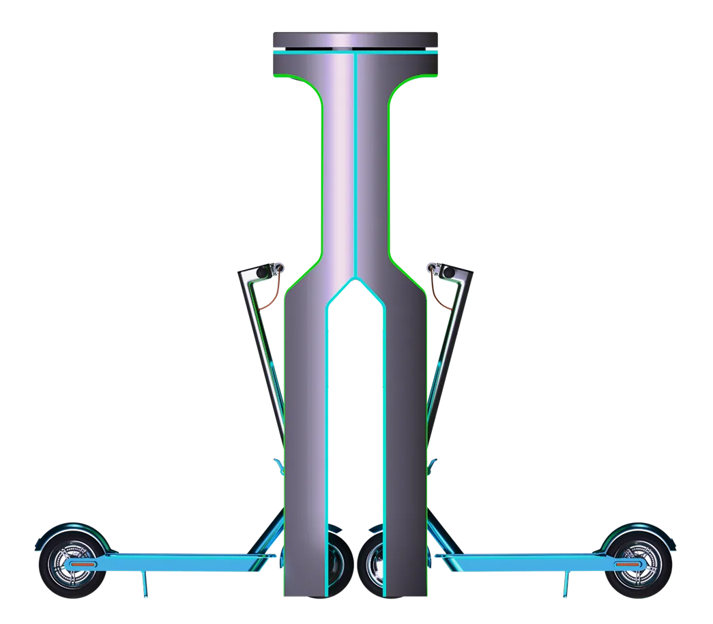
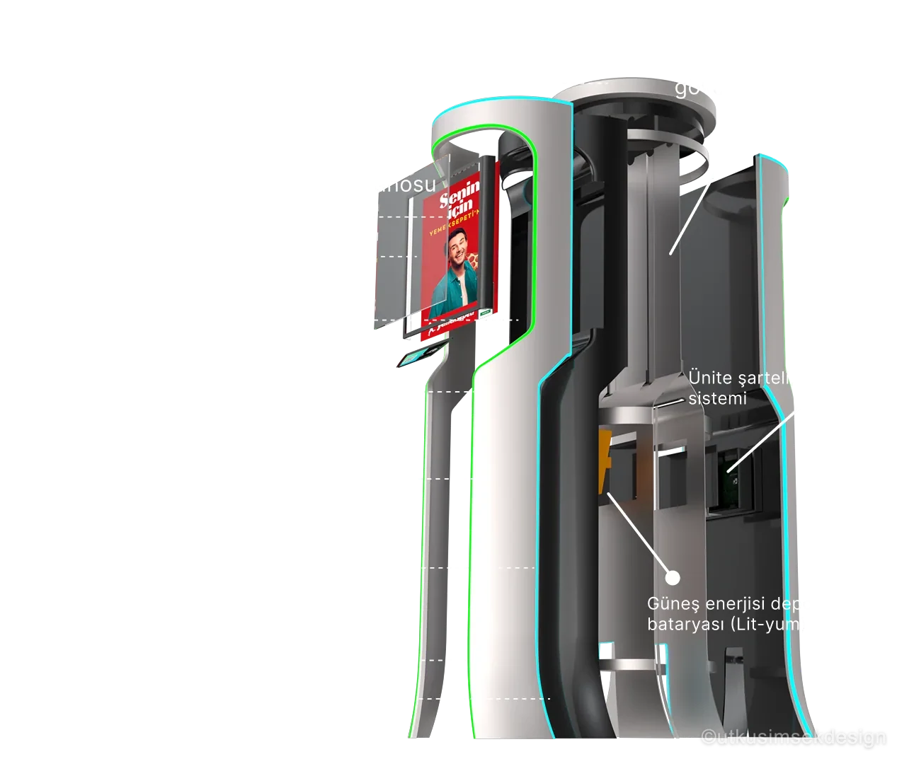

Ulaşım / Kentsel
2023 · Akıllı Şehir
Scooter Port
Şarj İstasyonu
Aşağı Kaydır
Scooter Port, şehir içi mikromobiliteyi daha erişilebilir ve sürdürülebilir hale getirmek için tasarlanmış akıllı bir scooter istasyonudur.




Sürükle, döndür, yakınlaştır — istasyonu istediğin açıdan incele.
Üst panele entegre monokristal güneş hücreleri, istasyonun kendi kendine yetebilmesini sağlar; şehir şebekesine yük bindirmeden temiz enerji üretir.
Çift yönlü şarj yuvası ve modüler taşıyıcı kolon yapısı sayesinde farklı kentsel mekânlara — sahil, park, AVM çevresi — kolayca uyarlanabilir.
QR/RFID ekranı ve uygulama entegrasyonu ile temassız kilit ve kullanıcı doğrulama; ödeme ve kullanım geçmişi mobil uygulama üzerinden takip edilir.
Tempered cam reklam yüzeyi ve çift yön bilgi LED'i; istasyonu sadece bir şarj noktası değil, kentsel iletişim ve yön bulma altyapısının parçası yapar.